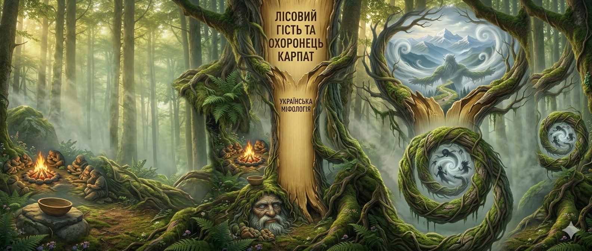
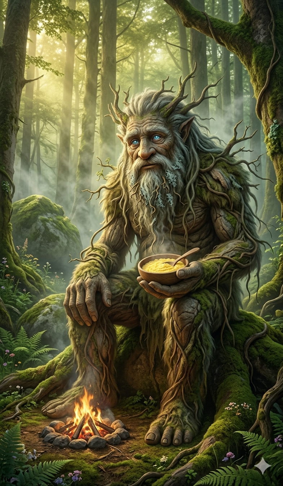
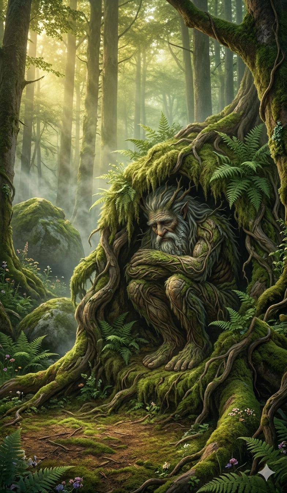

Чугайстер: Лісовий Гість та Охоронець Карпат

Містичний володар гір, що танцює з вітром
Серед густих карпатських лісів, де старі смереки торкаються самих небес, а тумани застигають між скелями, живе Чугайстер — одна з найзагадковіших істот українських вірувань. Його постать оповита сотнями легенд, що передаються від діда до внука біля нічних ватрищ. Описують його як могутнього велетня з небесно-блакитними очима, чиє тіло вкрите густою шерстю або білою, мов іній, корою прадавнього дерева. Він — справжній господар Чорногори, якого неможливо впіймати, якщо він сам того не забажає.
На відміну від підступних лісовиків чи блудів, що заманюють подорожніх у безвість, Чугайстер ніколи не чинить зла людям. Навпаки, він вважається добрим духом, що оберігає лісорубів та пастухів від нічних небезпек. Розповідають, що він часто приходить на запах свіжої кулеші до людського вогнища. Він тихо підсідає до вогню, гріє свої велетенські долоні та веде неспішні розмови про таємниці гір, поки перші промені сонця не торкнуться вершин. Його присутність дарує спокій, адже там, де відпочиває Чугайстер, жодна зла сила не наважиться підійти до табору.

У лісових переказах збереглося старе повір’я:
«Якщо зустрінеш у лісі високого діда, що закликає до танку — не відмовляй йому. Його танок шалений та швидкий, наче гірська річка під час зливи. Той, хто витримає цей неймовірний ритм і не впаде від утоми, отримає від лісового духа таємне благословення та успіх у кожній справі на все життя. Але пам'ятайте: Чугайстер відчуває фальш, тому танцювати треба з відкритою душею».
Проте не для всіх Чугайстер такий лагідний. Його головна місія — полювати на підступних мавок та нявок, які своїм солодким співом заманюють молодих хлопців у глибокі прірви та непролазні хащі. Коли в лісі здіймається раптовий сильний вітер, а дерева починають тривожно стогнати — це означає, що Лісовий Гість вийшов на полювання. Він розриває мавок, наче сухе осіннє листя, захищаючи кожного, хто заблукав у його володіннях. Кажуть, що саме завдяки йому високогірні пасовища залишаються безпечними для отар.
Багато вівчарів стверджують, що бачили Чугайстра на світанку, коли він повільно крокує гребнями гір, зникаючи у перших променях сонця. Він не потребує золота чи дарів, лише поваги до лісу та його мешканців. Якщо людина нищить дерева без потреби або смітить біля чистих джерел, Чугайстер може налякати її гучним сміхом, що відлунює від скель, нагадуючи, хто тут справжній господар. Але для щирої людини він назавжди залишиться надійним охоронцем і добрим сусідом у диких масивах Карпат.

Як розпізнати присутність Лісового Господаря
Голос: Схожий на віддалений гуркіт літнього грому або потужний тріск столітніх стовбурів, що здригаються під натиском буревію.
Звички: Він володіє неймовірною силою, але понад усе любить музику сопілки та тепло щирої людської гостинності біля вечірньої ватри.
Стихія: Нестримний та вільний вітер. Кажуть, що Чугайстер може в мить обернутися на сріблястий вихор, щоб непомітно зникнути в густих хащах за секунду до того, як ви його побачите.
Одяг: Легенди кажуть, що він не потребує вбрання, адже сама природа наділила його захистом — його шкіра міцна, як камінь, а дух невтомний, як вічність.
Сліди: Його кроки не залишають відбитків на траві, лише ледь чутне шелестіння листя видає його пересування лісом.